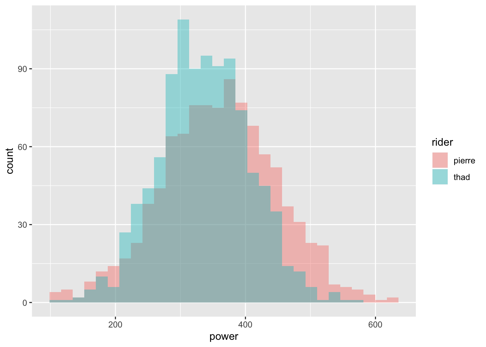
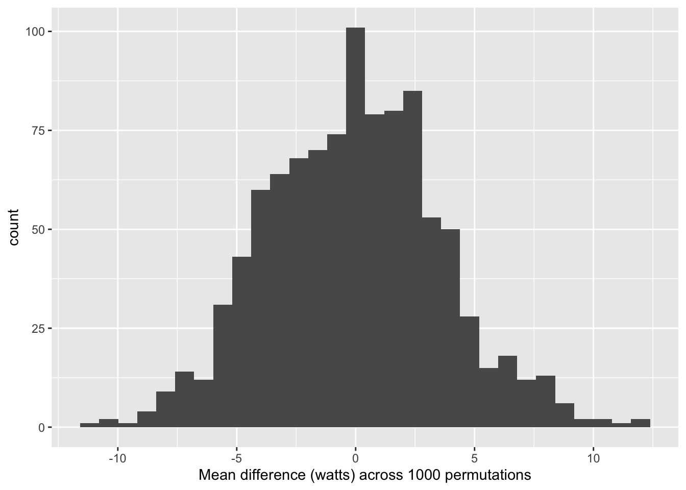

I currently work on a team that frequently relies on permutation tests to test the robustness of the analysis at hand, especially when analyzing data from randomized-controlled trials. The basic idea is to randomly re-allocate the treatment assignment across all observations. This re-allocation is usually repeated 1,000 or 10,000 times to acheive a distribution of the data under the null hypothesis that there is no difference between the groups. They are very flexible to the type of analysis, whether it’s logistic, negaitve binomial, poisson, or otherwise. Below, I test out a homemade permuation test on simulated data.
#load ggplot
library(ggplot2); library(purrr)
#set seed for reproducibility
set.seed(2^5)
#create fake cycling power data
pierre <- rnorm(1000, 360, sd=90)
thad <- rnorm(1000, 340, sd=70)Above I created the data from normal distributions, based on some theorized cycling power outputs in watts from two different cyclists. I want to find out if the power distributions of the two riders are significantly different; ie is one rider stronger than the other?
#plot the histgrams
df <- data.frame(power=c(pierre, thad), rider=c(rep("pierre", 1000), rep("thad", 1000)))
ggplot(df, aes(power, fill=rider)) +
geom_histogram(alpha = 0.4, position="identity")
#observed mean difference
mean_diff <- round(mean(pierre) - mean(thad))Plotting the histograms, we can see substantial overlap in power between the two riders. Thad appears to be a little more consistent with a narrower distribution however Pierre has a higher average wattage by 24 watts. Let’s see if the difference is significant according to permutation test.
#function to permute and find mean difference
permute_fxn <- function(i){
rows <- rnorm(1000)>0
p_permute <- c(pierre[!rows], thad[rows])
t_permute <- c(pierre[rows], thad[!rows])
mean(p_permute) - mean(t_permute)
}
#run permutation fxn to generate mean difference distribution-trying out Hadley's "map" syntax
diff_permute <- map_dbl(1:1000, permute_fxn)Here I conduct the re-allocation of the grouping variable which, in this case, is the rider identity. The permutation function may be a bit unconventional but legitimately shuffles rider identity by combining a random index of rows from each rider’s power distribution. Then I compute the mean difference and add it to a growing vector. The subsequent vector is the distribution of mean difference in power output across 1000 permutations under the null hypothesis.
#plot the distribution of mean difference
df_permute <- data.frame(permute=diff_permute)
ggplot(df_permute, aes(permute)) +
geom_histogram() +
xlab("Mean difference (watts) across 1000 permutations")
#mean difference 95%
diff_range <- round(quantile(diff_permute, probs = c(0.025, 0.975)), 1)The plot of the mean difference across 1000 permutations shows that under the null hypothesis, the mean difference appears to mean centered around 0, which is what we’d expect. The middle 95% of distribution covers -7 watts to 7.6 watts, which does not include the observed wattage difference of 24 and indicates that the two riders do have significantly different power outputs at the alpha 0.05 level.
Here I conducted permutation test, commonly used in epidemiology and econometrics, to test whether simulated data of two cyclists power outputs were significantly different. I found that, according to permutation test using alpha level of 0.05, the two riders do have significantly different average power outputs.